4 Forces, density and pressure
Turning effects of forces, equilibrium of forces, density and pressure
Learning objectives
By the end of this chapter, you should be able to:
- define and apply the moment of a force;
- understand that the weight of an object may be taken as acting at its centre of gravity;
- define a couple and the torque of a couple;
- state and apply the principle of moments;
- use a vector triangle to represent coplanar forces in equilibrium;
- define and use density and pressure;
- derive and use \(\Delta p=\rho g\Delta h\);
- understand that upthrust is due to a difference in hydrostatic pressure;
- calculate upthrust using \(F=\rho gV\).
4.1 Turning effects of forces
Centre of gravity
The centre of gravity of an object is the single point at which the whole weight of the object may be considered to act. For a uniform, symmetrical object it is at the geometric centre. For an irregular object the centre of gravity may lie outside the material of the object.
The centre of gravity is not the same as the centre of mass. The centre of mass is the point at which the whole mass may be considered to act; the centre of gravity is where the weight acts. For a uniform gravitational field the two points coincide.
Moment of a force
The moment of a force about a point is the turning effect of the force. It is defined as
\[\text{moment}=Fd,\]
where \(F\) is the force and \(d\) is the perpendicular distance from the line of action of the force to the point.
The moment has units \(\mathrm{N\,m}\). Moments may be taken as clockwise or anticlockwise about a chosen pivot.
Couples and torque
A couple is a pair of equal and opposite parallel forces whose lines of action do not coincide. A couple produces rotation only: its resultant force is zero but its resultant moment is non-zero.
The torque of a couple is
\[\tau=Fd,\]
where \(F\) is the magnitude of one of the forces and \(d\) is the perpendicular distance between the two lines of action. The torque has units \(\mathrm{N\,m}\).
Combining moments
When several forces act on a body, the resultant moment about a pivot is the algebraic sum of the individual moments. Taking one direction as positive:
\[\sum \text{clockwise moments} = \sum \text{anticlockwise moments}\]
when the body is in rotational equilibrium. Always use the perpendicular distance to the line of action, not the distance along the object.
4.2 Equilibrium of forces
Conditions for equilibrium
A system is in equilibrium when:
- the resultant force is zero; and
- the resultant torque is zero.
These conditions mean that the body has no acceleration and no angular acceleration. A body moving at constant velocity can be in equilibrium.
The principle of moments states that, for a body in equilibrium, the sum of the clockwise moments about any point equals the sum of the anticlockwise moments about the same point.
Coplanar forces and vector triangles
For three coplanar forces acting at a point, the body can be in equilibrium only if the three forces are represented, in magnitude and direction, by the three sides of a closed triangle taken in order.
For more than three forces, resolve into perpendicular components:
\[\sum F_x=0, \qquad \sum F_y=0.\]
If the lines of action of three non-parallel forces do not meet at a single point, the body will have a resultant moment and cannot be in equilibrium.
4.3 Density and pressure
Density
Density is the mass per unit volume of a substance:
\[\rho=\frac{m}{V}.\]
The SI unit of density is \(\mathrm{kg\,m^{-3}}\). A common non-SI unit is \(\mathrm{g\,cm^{-3}}\), where
\[1\ \mathrm{g\,cm^{-3}}=1000\ \mathrm{kg\,m^{-3}}.\]
Pressure in a solid
Pressure is the normal force acting per unit area:
\[p=\frac{F}{A}.\]
The SI unit of pressure is the pascal:
\[1\ \mathrm{Pa}=1\ \mathrm{N\,m^{-2}}.\]
Pressure is a scalar quantity. The force used in the definition is the force acting perpendicular to the surface.
Hydrostatic pressure
Consider a column of liquid of cross-sectional area \(A\), height \(\Delta h\) and density \(\rho\). The weight of the column is
\[W=mg=\rho Vg=\rho A\Delta h\,g.\]
The pressure due to the liquid at the base is
\[p=\frac{W}{A}=\rho g\Delta h.\]
The hydrostatic pressure increases with depth and with liquid density. Total pressure at a depth is the sum of the atmospheric pressure and \(\rho g\Delta h\):
\[p=p_{\text{atm}}+\rho g\Delta h.\]
Upthrust and Archimedes’ principle
Pressure in a fluid increases with depth, so the upward force on the bottom of a submerged object is greater than the downward force on its top. The resultant upward force is the upthrust.
The magnitude of the upthrust is equal to the weight of fluid displaced:
\[F=\rho_{\text{fluid}}gV,\]
where \(V\) is the volume of the object below the fluid surface. This is Archimedes’ principle. A floating object is in equilibrium when the upthrust equals its weight.
Multiple Choice Questions
4.1 Turning Effects & Equilibrium - Easy
Example 1 · 4.1 MC Easy Q1
What is the centre of gravity of an object?
A. the geometrical centre of the object
B. the point about which the total torque is zero
C. the point at which the weight of the object may be considered to act
D. the point through which gravity acts
Show answer and explanation
Answer: C. The centre of gravity is the point at which the whole weight of the object may be considered to act. Option A is true only for regular, uniform shapes. Option B describes the centre of rotational equilibrium.Example 2 · 4.1 MC Easy Q5
A street lamp is fixed to a wall by a metal rod and a cable.
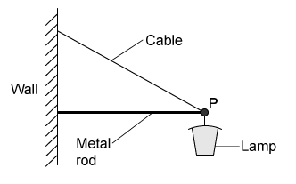
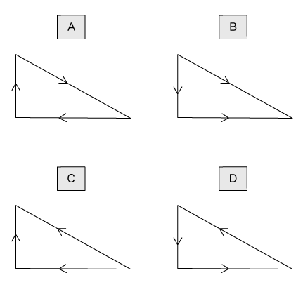
Which vector triangle represents the forces acting at point P?
Show answer and explanation
Answer: D. The forces acting at P are the weight (downwards), the tension in the cable (away from P along the cable) and the thrust in the rod (away from the wall). The correct vector triangle must have the weight arrow pointing downwards and the tension arrow directed away from the point. Option D is the only triangle that represents the three forces correctly.Example 3 · 4.1 MC Easy Q6
A uniform metre rule of weight 4.0 N is pivoted at the 60 cm mark. A 6.0 N weight is suspended from one end, causing the rule to rotate about the pivot.
At the instant when the rule is horizontal, what is the resultant turning moment about the pivot?
| Resultant moment | Direction | |
|---|---|---|
| A | 2.0 N m | clockwise |
| B | 2.0 N m | anticlockwise |
| C | 2.8 N m | clockwise |
| D | 2.8 N m | anticlockwise |
Show answer and explanation
Answer: A. The rule is uniform, so its weight acts at the 50 cm mark, 0.10 m from the pivot; this gives an anticlockwise moment of \(4.0\times0.10=0.40\ \mathrm{N\,m}\). The 6.0 N weight at the end is 0.40 m from the pivot, giving a clockwise moment of \(6.0\times0.40=2.4\ \mathrm{N\,m}\). The resultant moment is \(2.0\ \mathrm{N\,m}\) clockwise.4.1 Turning Effects & Equilibrium - Medium
Example 4 · 4.1 MC Medium Q1
A uniform metre rule is hung from the ceiling as shown. The string supports the rule at the 35 cm mark. The rule balances when a 75 g mass is hung from one end of the ruler.
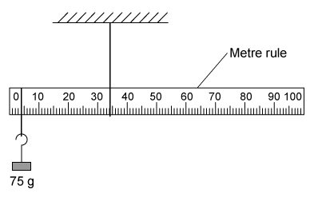
What is the mass of the metre rule?
A. 38 g
B. 51 g
C. 141 g
D. 159 g
Show answer and explanation
Answer: C. The rule is uniform, so its weight acts at the 50 cm mark. Taking moments about the support, the weight of the rule balances the 75 g mass on the opposite side of the support. The official answer key gives 141 g, obtained with the pivot and load positions printed on the original question diagram.Example 5 · 4.1 MC Medium Q2
Four beams of the same length each have three forces acting on them.
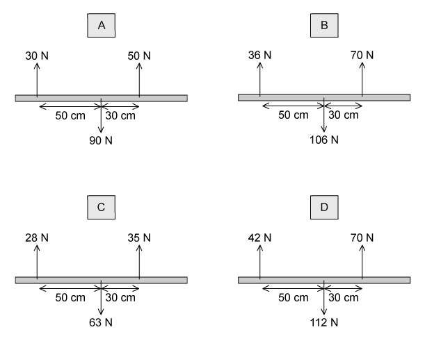
Which beam has both zero resultant force and zero resultant torque acting?
Show answer and explanation
Answer: D. For beam D the upward forces are \(42+70=112\ \mathrm{N}\) and the downward force is also \(112\ \mathrm{N}\), so the resultant force is zero. The clockwise moment is \(42\times50=2100\ \mathrm{N\,cm}\) and the anticlockwise moment is \(70\times30=2100\ \mathrm{N\,cm}\), so the resultant torque is also zero.Example 6 · 4.1 MC Medium Q7
A spindle is attached at one end to the centre of a lever of length 1.60 m and at its other end to the centre of a disc of radius 0.25 m. A string is wrapped round the disc, passes over a pulley and is attached to an 800 N weight.
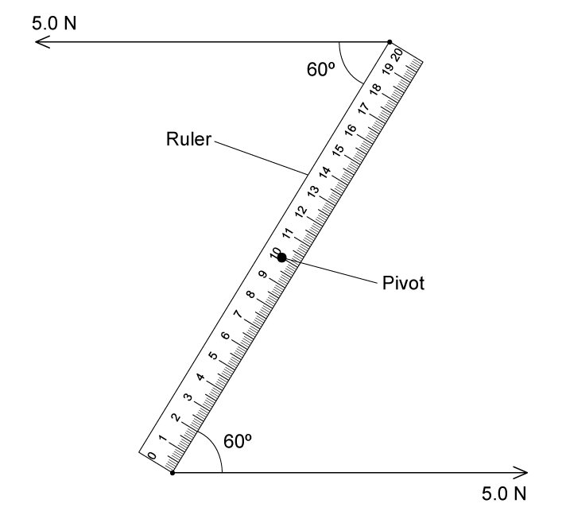
What is the minimum force \(F\), applied to each end of the lever, that could lift the weight?
A. 62.5 N
B. 125 N
C. 250 N
D. 750 N
Show answer and explanation
Answer: B. The anticlockwise moment produced by the weight is \(800\times0.25=200\ \mathrm{N\,m}\). The couple from the two equal lever forces gives a clockwise moment of \(F\times1.60\). Equating: \(F=200/1.60=125\ \mathrm{N}\).Example 7 · 4.1 MC Medium Q9
A rigid L-shaped lever arm is pivoted at point P. A 20 N force acts 4 m from P, a 10 N force acts 3 m from P and a 15 N force acts 3 m from P, as shown.
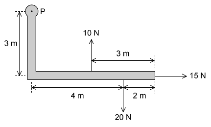
What is the magnitude of the resultant moment of these forces about point P?
A. 5 N m
B. 65 N m
C. 95 N m
D. 155 N m
Show answer and explanation
Answer: A. The 20 N force gives a clockwise moment of \(20\times4=80\ \mathrm{N\,m}\). The 10 N and 15 N forces give anticlockwise moments of \(10\times3=30\ \mathrm{N\,m}\) and \(15\times3=45\ \mathrm{N\,m}\). The resultant moment is \(80-30-45=5\ \mathrm{N\,m}\).4.1 Turning Effects & Equilibrium - Hard
Example 8 · 4.1 MC Hard Q1
The diagrams show two ways of hanging the same picture. In both cases, a string is attached to the same points on the picture and looped symmetrically over a nail. In diagram 1, the string loop is shorter than in diagram 2.
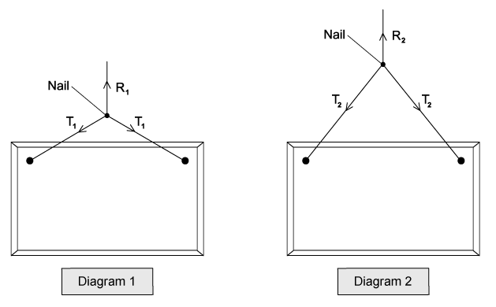
Which information about the magnitude of the forces is correct?
A. \(R_1=R_2\), \(T_1<T_2\)
B. \(R_1=R_2\), \(T_1>T_2\)
C. \(R_1>R_2\), \(T_1<T_2\)
D. \(R_1<R_2\), \(T_1=T_2\)
Show answer and explanation
Answer: B. The picture has the same weight in both cases, so the resultant force on the nail is the same: \(R_1=R_2\). With the shorter loop, the string makes a smaller angle to the vertical, so the tension in each string must be larger to support the same weight: \(T_1>T_2\).Example 9 · 4.1 MC Hard Q2
A uniform ladder rests against a vertical wall where there is negligible friction. The bottom of the ladder rests on rough ground where there is friction. The top of the ladder is at height \(h\) above the ground and the foot of the ladder is at distance \(2a\) from the wall.
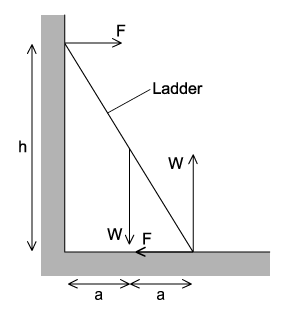
Which equation is formed by taking moments?
A. \(Wa+Fh=2Wa\)
B. \(Fa+Wa=Fh\)
C. \(Wa+2Wa=Fh\)
D. \(Wa-2Wa=2Fh\)
Show answer and explanation
Answer: A. Taking moments about the foot of the ladder, the weight \(W\) acts at the midpoint of the ladder, a horizontal distance \(a\) from the foot, giving a clockwise moment \(Wa\). The wall reaction \(F\) acts at height \(h\), giving an anticlockwise moment \(Fh\). Equating the total clockwise and anticlockwise moments gives \(Wa+Fh=2Wa\).Example 10 · 4.1 MC Hard Q3
An archer draws his bowstring back to position X: tension \(T=110\ \mathrm{N}\) in each half of the string, with the two halves at \(120^\circ\) to each other. He then draws the bowstring back further to position Y: tension \(T=150\ \mathrm{N}\) in each half, with the two halves at \(90^\circ\) to each other.
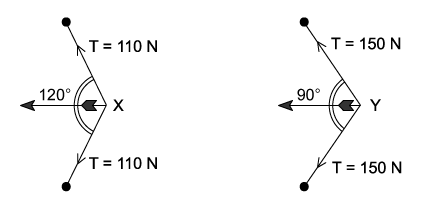
The archer finds the resultant force on the arrow is greater when the arrow is released from position Y.
What is the increase in force?
A. 51 N
B. 55 N
C. 102 N
D. 110 N
Show answer and explanation
Answer: C. At X the resultant force is \(2T\cos(120^\circ/2)=2\times110\times\cos60^\circ=110\ \mathrm{N}\). At Y it is \(2\times150\times\cos45^\circ=212\ \mathrm{N}\). The increase is \(212-110=102\ \mathrm{N}\).4.2 Density & Pressure - Easy
Example 11 · 4.2 MC Easy Q1
The formula for hydrostatic pressure is \(p=\rho gh\).
Which equation, or principle of physics, is used in the derivation of this formula?
A. density = mass / volume
B. potential energy = mgh
C. atmospheric pressure decreases with height
D. density increases with depth
Show answer and explanation
Answer: A. The derivation uses \(\rho=m/V\) and \(p=F/A\): the weight of a column of liquid is \(\rho Vg\), and dividing by the base area gives \(p=\rho gh\).Example 12 · 4.2 MC Easy Q2
The density of mercury is \(13.6\times10^3\ \mathrm{kg\,m^{-3}}\). The pressure difference between the bottom and the top of a column of mercury is 100 kPa.
What is the height of the column?
A. 0.75 m
B. 1.3 m
C. 74 m
D. 720 m
Show answer and explanation
Answer: A. Using \(h=p/(\rho g)=(100\times10^3)/(13.6\times10^3\times9.81)=0.75\ \mathrm{m}\).Example 13 · 4.2 MC Easy Q3
An object, immersed in a liquid in a tank, experiences an upthrust.
What is the physical reason for this upthrust?
A. The density of the body differs from that of the liquid.
B. The density of the liquid increases with depth.
C. The pressure in the liquid increases with depth.
D. The value of g in the liquid increases with depth.
Show answer and explanation
Answer: C. Pressure increases with depth, so the upward force on the bottom of the object is greater than the downward force on the top. This difference produces the upthrust.Example 14 · 4.2 MC Easy Q4
The Mariana Trench in the Pacific Ocean has a depth of about 10 km. Sea water is assumed incompressible with a density of about \(1020\ \mathrm{kg\,m^{-3}}\).
What would be the approximate pressure at that depth?
A. \(10^5\ \mathrm{Pa}\)
B. \(10^6\ \mathrm{Pa}\)
C. \(10^7\ \mathrm{Pa}\)
D. \(10^8\ \mathrm{Pa}\)
Show answer and explanation
Answer: D. \(p=\rho gh=1020\times9.81\times10\,000=1.0\times10^8\ \mathrm{Pa}\).4.2 Density & Pressure - Medium
Example 15 · 4.2 MC Medium Q2
Atmospheric pressure at sea level has a value of 100 kPa. The density of sea water is \(1020\ \mathrm{kg\,m^{-3}}\).
At which depth in the sea would the total pressure be 150 kPa?
A. 5 m
B. 25 m
C. 50 m
D. 55 m
Show answer and explanation
Answer: A. The gauge pressure is \(50\ \mathrm{kPa}\). Using \(h=p/(\rho g)=(50\times10^3)/(1020\times9.81)=5.0\ \mathrm{m}\).Example 16 · 4.2 MC Medium Q6
\(1.5\ \mathrm{m^3}\) of water is mixed with \(0.50\ \mathrm{m^3}\) of alcohol. The density of water is \(1000\ \mathrm{kg\,m^{-3}}\) and the density of alcohol is \(800\ \mathrm{kg\,m^{-3}}\).
What is the density of the mixture with volume \(2.0\ \mathrm{m^3}\)?
A. \(850\ \mathrm{kg\,m^{-3}}\)
B. \(900\ \mathrm{kg\,m^{-3}}\)
C. \(940\ \mathrm{kg\,m^{-3}}\)
D. \(950\ \mathrm{kg\,m^{-3}}\)
Show answer and explanation
Answer: D. Total mass is \(1.5\times1000+0.5\times800=1900\ \mathrm{kg}\), so \(\rho=1900/2.0=950\ \mathrm{kg\,m^{-3}}\).Example 17 · 4.2 MC Medium Q8
At a depth of 20 cm in a liquid of density \(1800\ \mathrm{kg\,m^{-3}}\), the pressure due to the liquid is \(p\).
Another liquid has a density of \(1200\ \mathrm{kg\,m^{-3}}\).
What is the pressure due to this liquid at a depth of 60 cm?
A. \(p\)
B. \(2p\)
C. \(3p\)
D. \(4p\)
Show answer and explanation
Answer: B. \(p_2/p_1=(\rho_2 h_2)/(\rho_1 h_1)=(1200\times0.60)/(1800\times0.20)=2\), so the pressure is \(2p\).4.2 Density & Pressure - Hard
Example 18 · 4.2 MC Hard Q7
Two solid substances P and Q have atoms of mass \(M_P\) and \(M_Q\) and \(n_P\) and \(n_Q\) atoms per unit volume. The density of P is greater than the density of Q.
Which expression must be correct?
A. \(M_P>M_Q\)
B. \(n_P>M_Q\)
C. \(M_P n_P>M_Q n_Q\)
D. \(M_Q n_Q>M_P n_P\)
Show answer and explanation
Answer: C. Density is mass per unit volume: \(\rho=Mn\). Since \(\rho_P>\rho_Q\), we must have \(M_P n_P>M_Q n_Q\).Example 19 · 4.2 MC Hard Q9
A child drinks a liquid of density \(\rho\) through a vertical straw. Atmospheric pressure is \(p_0\) and the child is capable of lowering the pressure at the top of the straw by 10%. The acceleration of free fall is \(g\).
What is the maximum length of straw that would enable the child to drink the liquid?
A. \(\frac{p_0}{10\rho g}\)
B. \(\frac{9p_0}{10\rho g}\)
C. \(\frac{p_0}{\rho g}\)
D. \(\frac{10p_0}{\rho g}\)
Show answer and explanation
Answer: A. The child can create a pressure difference of \(\frac{1}{10}p_0\). This must balance \(\rho g h\), so \(h=\frac{p_0}{10\rho g}\).Example 20 · 4.2 MC Hard Q10
Icebergs typically float with a large volume of ice beneath the water. Ice has a density of \(917\ \mathrm{kg\,m^{-3}}\) and sea water has a density of \(1020\ \mathrm{kg\,m^{-3}}\).
What fraction of the ice is submerged underwater?
A. 0.05
B. 0.10
C. 0.90
D. 0.95
Show answer and explanation
Answer: C. For a floating object, the weight of ice equals the weight of sea water displaced: \(\rho_{\text{ice}}gV=\rho_{\text{water}}gV_{\text{sub}}\), so the submerged fraction is \(917/1020=0.90\).Structured Questions
4.1 Turning Effects & Equilibrium - Easy
Example 1 · 4.1 SQ Easy Q1
(a) Define the following:
(i) moment of a force; [2]
(ii) centre of gravity. [1]
[3 marks]
(b) A teacher sets some Physics students the task of finding the weight of a broom using only a ruler, some thin, light string, and a set of laboratory masses. The equipment is initially arranged as shown in Fig. 1.1.
For the arrangement in Fig. 1.1:
(i) state why the broom is hanging horizontally; [2]
(ii) state what measurement the students should make to start their investigation to find the weight of the broom. [1]
[3 marks]
(c) The measurement of the position of the string found in part (b) is shown in Fig. 1.2. The string is moved towards the end of the handle, so that the broom is in equilibrium when a 0.5 kg mass is hung a distance of 0.45 m from the string, as shown in Fig. 1.3.
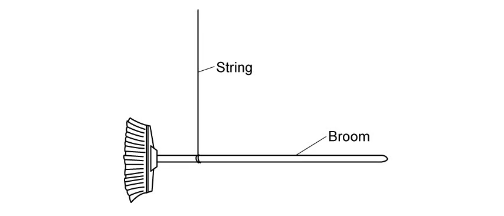
Determine:
(i) the distance between the centre of mass of the broom and the point where the string is attached; [1]
(ii) the force exerted by the 0.5 kg mass. [1]
[2 marks]
(d) Calculate the weight of the broom. [2 marks]
Show mark scheme / model answer
- (a)(i) Moment of a force is the turning effect of a force about a point, equal to the product of the force and its perpendicular distance from the point: \(M=Fd\).
[2] - (a)(ii) Centre of gravity is the point at which the whole weight of the object may be considered to act.
[1] - (b)(i) The broom is in equilibrium with zero resultant moment: the line of action of its weight passes through the point of support, so there is no turning effect.
[2] - (b)(ii) Measure the distance from the string to each end of the broom, or locate the point of balance.
[1] - (c)(i) The centre of mass is 0.12 m from the string.
[1] - (c)(ii) Force \(=mg=0.5\times9.81=4.9\ \mathrm{N}\).
[1] - (d) Taking moments about the string: \(W\times0.12=4.9\times0.45\), so \(W=18.4\ \mathrm{N}\).
[2]
Example 2 · 4.1 SQ Easy Q2
(a) A metre rule is balanced on a pivot at its midpoint. A force of 10.0 N acts at a distance of 8.0 cm from one end of the rule, as shown in Fig. 1.1.
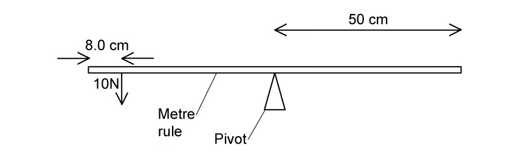
Calculate the moment of the 10.0 N force about the pivot. [3 marks]
(b) A mass is placed at a point 35 cm from the pivot, which makes the metre rule balance.
On Fig. 1.1, draw an arrow to show the position of the mass and the direction of the force it exerts. [2 marks]
(c) Calculate the mass which has been placed to balance the ruler in part (a). [4 marks]
Show mark scheme / model answer
- (a) The force is \(8.0\ \mathrm{cm}\) from the end, so its distance from the midpoint pivot is \(50-8=42\ \mathrm{cm}=0.42\ \mathrm{m}\).
[2]Moment \(=10.0\times0.42=4.2\ \mathrm{N\,m}\).[1] - (b) Draw a downward arrow at a point 35 cm from the pivot on the opposite side of the rule.
[2] - (c) Let the balancing mass be \(m\). Its moment is \(mg\times0.35\).
[1]Equating moments: \(mg\times0.35=4.2\).[2]Hence \(m=4.2/(0.35\times9.81)=1.22\ \mathrm{kg}\).[1]
Example 3 · 4.1 SQ Easy Q3
(a) For a couple:
(i) state the definition; [1]
(ii) state the conditions which have to be true for the forces in a couple. [3]
[4 marks]
(b) Fig. 1.1 shows a pair of forces acting on a rotating wheel.
(i) State the definition and units of torque. [1]
(ii) For the couple in Fig. 1.1, state the equation which can be used to determine the torque. [1]
[2 marks]
(c) For the couple in Fig. 1.1, the two forces \(F\) are both 15 N and the perpendicular distance \(s\) between them is 0.5 m.
Calculate the torque of this couple. [2 marks]
(d) The forces in Fig. 1.1 are changed so that they act at an angle of \(60^\circ\) to the horizontal distance between them.
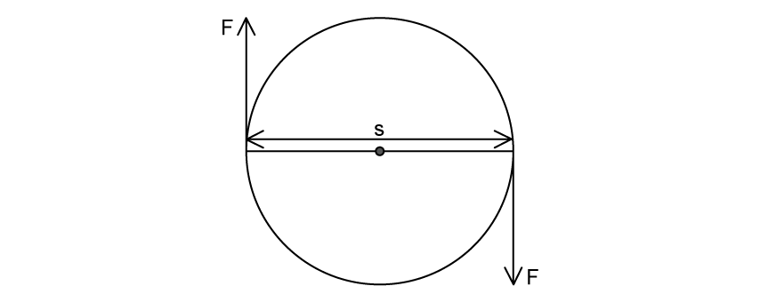
Calculate the new torque on the wheel. [3 marks]
Show mark scheme / model answer
- (a)(i) A couple is a pair of equal and opposite parallel forces whose lines of action do not coincide, producing rotation only.
[1] - (a)(ii) The forces are equal in magnitude, parallel, opposite in direction and separated by a perpendicular distance.
[3] - (b)(i) Torque is the product of one of the forces of a couple and the perpendicular distance between them; unit is \(\mathrm{N\,m}\).
[1] - (b)(ii) \(\tau=Fd\).
[1] - (c) \(\tau=15\times0.5=7.5\ \mathrm{N\,m}\).
[2] - (d) Perpendicular distance \(=s\sin60^\circ=0.5\times0.866=0.433\ \mathrm{m}\).
[2]New torque \(=15\times0.433=6.5\ \mathrm{N\,m}\).[1]
4.2 Density & Pressure - Easy
Example 4 · 4.2 SQ Easy Q1
(a) State the word definition of density. [1 mark]
(b) When calculating density both the equation and units are required.
(i) State the equation for density, defining all the terms used. [1]
(ii) State the SI units for density and a non-SI unit which is commonly used. [2]
[3 marks]
(c) For pressure caused by a solid, state:
(i) the definition of pressure; [1]
(ii) the equation for pressure, defining the terms used. [1]
[2 marks]
(d) Fig. 1.1 shows a measuring cylinder containing a liquid with depth \(h\) and cross-sectional area \(A\).
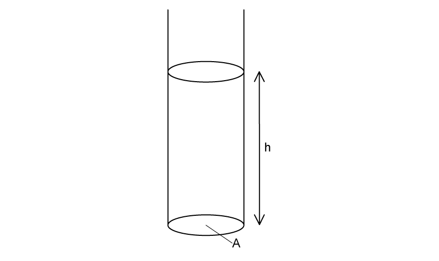
Using the equations you stated in (b) and (c), show that the pressure at a point in the liquid is \(\Delta p=\rho g\Delta h\). [2 marks]
Show mark scheme / model answer
- (a) Density is the mass per unit volume of a substance.
[1] - (b)(i) \(\rho=m/V\), where \(\rho\) is density, \(m\) is mass and \(V\) is volume.
[1] - (b)(ii) SI unit is \(\mathrm{kg\,m^{-3}}\); a common non-SI unit is \(\mathrm{g\,cm^{-3}}\).
[2] - (c)(i) Pressure is the normal force acting per unit area.
[1] - (c)(ii) \(p=F/A\), where \(p\) is pressure, \(F\) is the normal force and \(A\) is the area.
[1] - (d) Mass of liquid \(=\rho V=\rho A\Delta h\), so its weight is \(\rho A\Delta h\,g\).
[1]Pressure \(=\frac{W}{A}=\rho g\Delta h\).[1]
Example 5 · 4.2 SQ Easy Q3
(a) Complete the definition of hydrostatic pressure:
Hydrostatic pressure is the pressure that is exerted by a ______ at ______ at a given point within the fluid, due to the force of ______. [3 marks]
(b) A cylinder of length 1.8 m is submerged vertically in a tank of sea water so that the top of the cylinder is 0.2 m below the surface of the water, as shown in Fig. 1.1. The density of the sea water is \(1020\ \mathrm{kg\,m^{-3}}\).
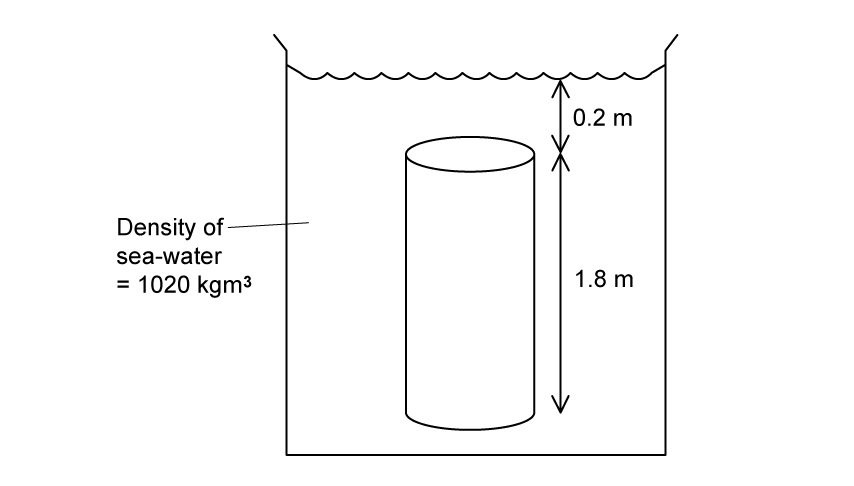
Calculate the difference in hydrostatic pressure between the top and bottom surfaces of the cylinder. [2 marks]
(c) The cylinder has a diameter of 75 cm.
Calculate the upthrust on the cylinder. [4 marks]
(d) The sea water in Fig. 1.1 is replaced with pure water which has a lower density than sea water.
Without further calculation:
(i) state and explain the effect this would have on the upthrust on the cylinder; [2]
(ii) hence state whether the cylinder would sink, float or stay at the same position in the tank. [1]
[3 marks]
Show mark scheme / model answer
- (a) Hydrostatic pressure is the pressure exerted by a liquid at rest at a given point within the fluid, due to the force of gravity.
[3] - (b) \(\Delta p=\rho g\Delta h=1020\times9.81\times1.8\).
[1]\(\Delta p=1.80\times10^4\ \mathrm{Pa}\).[1] - (c) Area \(A=\pi r^2=\pi(0.375)^2=0.442\ \mathrm{m^2}\).
[1]Upthrust \(=\Delta p\times A\).[1]\(F=1.80\times10^4\times0.442\).[1]\(F=7.95\times10^3\ \mathrm{N}\).[1] - (d)(i) The upthrust decreases because upthrust is proportional to the density of the surrounding fluid.
[2] - (d)(ii) The cylinder sinks.
[1]
4.1 Turning Effects & Equilibrium - Medium
Example 6 · 4.1 SQ Medium Q1
(a) A team of decorators set up a raised bench to allow them to reach the ceiling. The bench consists of a plank resting horizontally on two supports B and C. The plank is modelled as a uniform rod AD of length 2.7 m and mass 15 kg. The supports at B and C are 0.4 m from each end of the plank, as shown in Fig. 1.1.
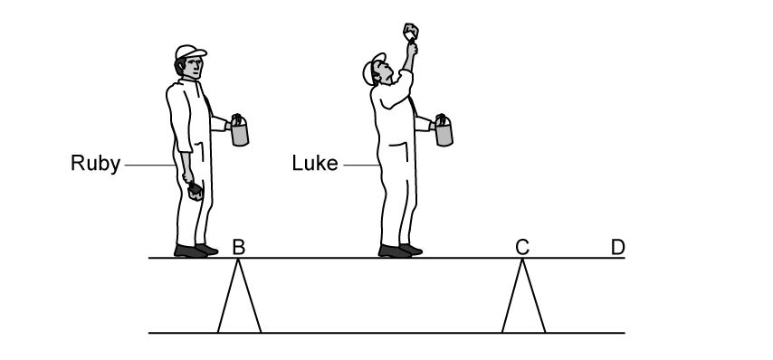
Two decorators, Ruby and Luke, stand on the plank. Luke has a mass of 85 kg and stands in the middle of the plank. Ruby has a mass of 72 kg and stands at end A. The plank remains horizontal and in equilibrium. The decorators can be modelled as point masses.
Calculate:
(i) the magnitude of the normal reaction force at B; [3]
(ii) the magnitude of the normal reaction force at C. [3]
[6 marks]
(b) Whilst Ruby stays at point A, Luke now moves along the plank to a point X. The plank remains horizontal and in equilibrium, and the magnitude of the normal reaction force at B is now twice the magnitude of the normal reaction force at C.
Calculate the distance BX. [4 marks]
Show mark scheme / model answer
- (a)(i) Total weight \(=(72+85+15)g=172g=1687\ \mathrm{N}\).
[1]Taking moments about C: \(R_B\times1.9=72g\times2.3+(85g+15g)\times0.95\).[1]\(R_B=1300\ \mathrm{N}\) (2 s.f.).[1] - (a)(ii) \(R_C=(72g+85g+15g)-R_B\).
[2]\(R_C=340\ \mathrm{N}\) (2 s.f.).[1] - (b) With \(R_B=2R_C\) and \(R_B+R_C=172g\), \(R_C=562\ \mathrm{N}\).
[1]Taking moments about B: \(85g\times x+15g\times0.95=72g\times0.4+R_C\times1.9\).[2]Solving gives \(x=1.5\ \mathrm{m}\) from B.[1]
4.2 Density & Pressure - Medium
Example 7 · 4.2 SQ Medium Q1
(a) A designer tests how far into a measuring cylinder of water a wooden rod will sink when dropped from various heights. The wooden rod has mass \(1.30\times10^{-2}\ \mathrm{kg}\), diameter \(1.5\times10^{-2}\ \mathrm{m}\) and length \(7.5\times10^{-2}\ \mathrm{m}\).
(i) Calculate the density of the wood. [2]
(ii) State and explain why the designer chose this type of wood to use in their investigation. [2]
(iii) Suggest one change to the experimental set-up which the designer needs to make to model the situation they are investigating. [2]
[6 marks]
(b) The wooden rod is held in a clamp so that it can be quickly released from rest. Initially it is clamped so that the base is at a height \(h=0.20\ \mathrm{m}\) above the water surface.
Calculate the speed of the rod as its base reaches the water. Ignore air resistance. [2 marks]
(c) Fig. 1.2 shows the wooden rod fully submerged under the water surface. The rod is moving vertically downwards and has not yet come to rest.
(i) Sketch on Fig. 1.2 the forces acting on the wooden rod. [3]
(ii) Describe and explain how the resultant force on the wooden cylinder varies from the moment the cylinder is fully submerged until it reaches its deepest point. [3]
[6 marks]
(d) The investigation concludes that an exciting but safe experience can be had by jumping into water which is at least six metres deep, sinking to no more than four metres. The density of sea water is \(1030\ \mathrm{kg\,m^{-3}}\).
Suggest a likely range of pressure changes they will feel in their ears. [4 marks]
Show mark scheme / model answer
- (a)(i) Cross-sectional area \(A=\pi(7.5\times10^{-3})^2=1.77\times10^{-4}\ \mathrm{m^2}\); volume \(=A\times7.5\times10^{-2}=1.33\times10^{-5}\ \mathrm{m^3}\).
[1]\(\rho=m/V=980\ \mathrm{kg\,m^{-3}}\).[1] - (a)(ii) The density is close to the density of water,
[1]so it models the human body, which is mostly water.[1] - (a)(iii) Add salt or sugar to the water to mimic the greater density of sea water.
[2] - (b) \(v^2=u^2+2as=0+2\times9.81\times0.20\).
[1]\(v=2.0\ \mathrm{m\,s^{-1}}\).[1] - (c)(i) Weight downwards, upthrust upwards and drag upwards; the upthrust and drag arrows together are shorter than the weight arrow when the rod is still accelerating downwards.
[3] - (c)(ii) The upthrust is constant once fully submerged, but the drag increases with speed.
[2]The resultant downward force therefore decreases until it becomes zero at maximum depth.[1] - (d) At 4 m, \(p=\rho gh=1030\times9.81\times4=4.0\times10^4\ \mathrm{Pa}\).
[2]The likely range of pressure change is roughly \(0\) to \(4\times10^4\ \mathrm{Pa}\).[2]
Example 8 · 4.2 SQ Medium Q4
(a) A submarine below the surface of the sea is stationary in a region where the density of sea water is \(1.03\times10^3\ \mathrm{kg\,m^{-3}}\). The submarine has a volume of \(5.83\times10^3\ \mathrm{m^3}\).
Calculate the upthrust exerted on the submarine by the sea water. [2 marks]
(b) Explain why the mass of the submarine must be \(6.0\times10^6\ \mathrm{kg}\). [2 marks]
(c) The submarine moves into a region of the sea where the water is less salty, and the density of the water reduces to \(1.01\times10^3\ \mathrm{kg\,m^{-3}}\).
Explain what would happen to the submarine as it moves into this region of lower density sea water. [3 marks]
(d) The submarine alters its weight by pumping water in or out of its internal tanks.
Determine the mass of water that the submarine should pump, in or out of its tanks, to maintain its depth below the surface of the sea. [2 marks]
Show mark scheme / model answer
- (a) \(F=\rho gV=1.03\times10^3\times9.81\times5.83\times10^3\).
[1]\(F=5.89\times10^7\ \mathrm{N}\).[1] - (b) The submarine is stationary, so the upthrust equals its weight.
[1]\(m=F/g=5.89\times10^7/9.81=6.0\times10^6\ \mathrm{kg}\).[1] - (c) The upthrust decreases because it is proportional to the water density.
[2]The weight is unchanged, so the submarine sinks.[1] - (d) New upthrust \(=1.01\times10^3\times9.81\times5.83\times10^3=5.78\times10^7\ \mathrm{N}\).
[1]The submarine must pump out water of mass about \(1.1\times10^5\ \mathrm{kg}\).[1]
4.2 Density & Pressure - Hard
Example 9 · 4.2 SQ Hard Q1
The Cartesian Diver is a popular science project used to demonstrate physical concepts. A ‘diver’ is made by bending a loop of drinking straw into a U-shape and weighting it with modelling clay. A large plastic bottle is filled with water, leaving a small volume of air at the top. The diver is added so that some water enters it but the straw remains floating upright due to trapped air. The lid is tightly screwed back onto the bottle.
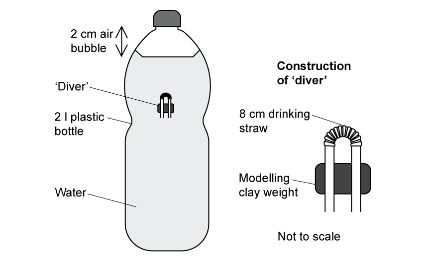
When the sides of the bottle are squeezed and released, the ‘diver’ moves up and down rapidly.
Discuss the physics of the Cartesian Diver when the sides of the bottle are squeezed.
(i) Explain the observed motion of the ‘diver’. [5]
(ii) Predict which direction the diver moves in when the sides of the bottle are squeezed. [1]
[5 marks]
(b) When the sides of the bottle are released, the diver reverses direction.
Explain why the diver returns to its original position in the bottle. [4 marks]
Show mark scheme / model answer
- (a)(i) Squeezing the bottle increases the pressure on the water.
[1]The increased pressure compresses the trapped air inside the diver.[1]The volume of the air bubble decreases, so the diver displaces less water and the upthrust decreases.[2]The weight of the diver is unchanged, so the diver sinks.[1] - (a)(ii) The diver moves downwards.
[1] - (b) When the bottle is released, the pressure decreases and the trapped air expands again.
[2]The displaced volume and upthrust increase,[1]so the diver rises back to its original position.[1]
Example 10 · 4.2 SQ Hard Q3
A very large hot air balloon can carry 25-30 people. The envelope has a diameter at its widest point of 32 m when filled with air. The total mass of the balloon, air, equipment and passengers is 20 900 kg. When the air temperature is \(15^\circ\mathrm{C}\), the density of the air outside the balloon is \(1.225\ \mathrm{kg\,m^{-3}}\).
When the air inside the envelope is hot enough, the balloon is released.
(i) Calculate the resultant upwards force on the balloon. [3]
(ii) Calculate the initial upwards acceleration of the balloon. [1]
[4 marks]
Show mark scheme / model answer
- (i) Radius \(=16\ \mathrm{m}\); volume \(=\frac{4}{3}\pi(16)^3=1.72\times10^4\ \mathrm{m^3}\).
[1]Upthrust \(=\rho gV=1.225\times9.81\times1.72\times10^4=2.06\times10^5\ \mathrm{N}\).[1]Weight \(=20\,900\times9.81=2.05\times10^5\ \mathrm{N}\); resultant force \(=1.3\times10^3\ \mathrm{N}\) upwards.[1] - (ii) \(a=F/m=1.3\times10^3/20\,900=0.062\ \mathrm{m\,s^{-2}}\) upwards.
[1]
Chapter checklist
Original question PDFs
- 4.1 Turning Effects & Equilibrium - MC Easy
- 4.1 Turning Effects & Equilibrium - MC Medium
- 4.1 Turning Effects & Equilibrium - MC Hard
- 4.1 Turning Effects & Equilibrium - SQ Easy
- 4.1 Turning Effects & Equilibrium - SQ Medium
- 4.1 Turning Effects & Equilibrium - SQ Hard
- 4.2 Density & Pressure - MC Easy
- 4.2 Density & Pressure - MC Medium
- 4.2 Density & Pressure - MC Hard
- 4.2 Density & Pressure - SQ Easy
- 4.2 Density & Pressure - SQ Medium
- 4.2 Density & Pressure - SQ Hard